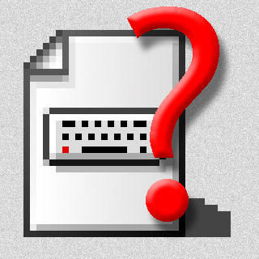
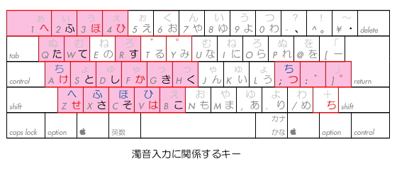
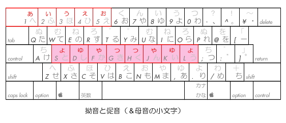
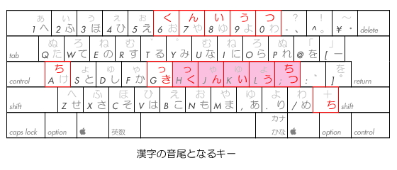
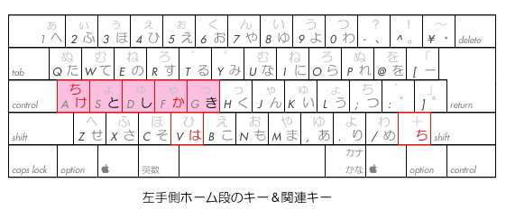
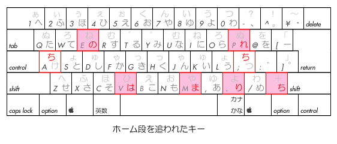
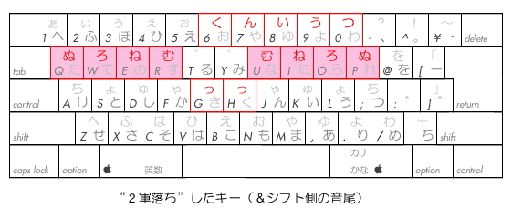
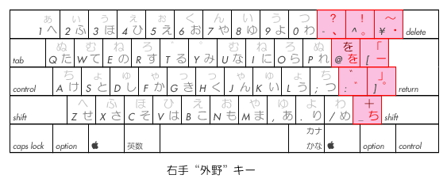
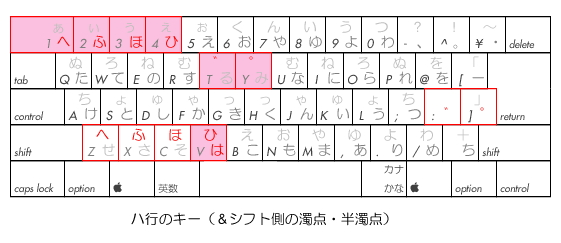
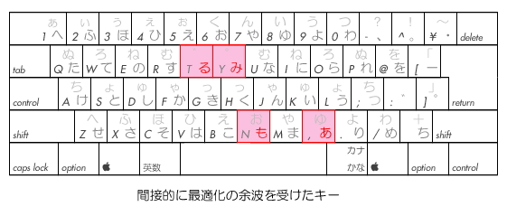

ようこそ！こちらは『JISかな改』のサポートページです。
【『JISかな改』とは？】
JISかな配列を、日本語の特性と 文字の使用頻度に基づいて最適化した キー配列です。
具体的には、
１．漢字の読みの“音尾”となる「んいうつ」を右手ホームポジションに移動。
２．濁音を持つ文字を左手側にまとめ、濁点を打ちやすい位置に移動。
３．拗音をホーム段に移動（シフト側）。かつ左右対称に配置。
４．最上段の文字を下段のシフト側にも配置。（＝タッチタイピングが可能）
５．右手外野のキーに記号類をまとめ、日本語の文章を打ちやすくした。
６．その他、元配列との互換性や、運指等にも配慮しつつ再配置。
７．ＵＳキーボードにも対応。
です。
【配列図】

図１基本仕様（ANSIキーボード使用時）

図２参考仕様（JISキーボード使用時）
・ダウンロードは こちら
(Mac OS 9 版：公開版) から。
（最適化の理由や 配置の根拠なども 添付のドキュメントに書いてあります）
なお、『JISかな改』の Mac OS X 版(ver.6.6)を、本ＨＰ内に限り、
暫定的に配布することにします。
ただし、Mac OS X では、システムリソースにパッチを当てるというようなわけにはいかないので、
当該ファイルを手動で入れ替えていただくことになります。
入れ換えるには、管理者権限が必要となります。（たいがいはマシンのオーナーで す）
入れ換えるファイルは、
「System/Library/Keyboard
Layouts/Japanese.bundle/Contents/Resources/Japanese.rsrc」
です。
初めに元のファイルをバックアップして（普通に移動するだけでコピーになります）
その後、ゴミ箱に捨てます。この時、パスワードの入力が必要になります。
次に、当ファイルをこのフォルダーにコピーします。この時にもＰＷが必要です。
入れ換えたら再起動してください。
なお、当然ですが、自己責任で、元のファイルは捨てないで、大切に保存しておいてください。
万一不具合が発生した場合には、この逆の操作をして元に戻してください。
ダウンロードは こちら (Mac OS X 版：ＨＰ限定版)
から。
（※当該ファイルのみです）
【 JISかな配列と『JISかな改』】
『JISかな改』は その名の通り、JISかな配列を ベースとしています。
見ているだけで気分が悪くなってしまうような(笑)悪評高い旧JISかな配列を、
なぜ改造してまで使うことにしたのか――。
ここでは、その理由を、旧JISかな配列のコンセプトを探ることで
説明していきたいと思います。
（※以下、旧JISかな配列を「旧配列」もしくは「旧JIS」等と呼びます）
【他のかな配列との比較】
いきなりですが、まずは、他の かな配列との比較から見ていきたいと思います。
というか、いきなりですが、結論的に言うと、
他のかな配列は、文字の使用頻度をあまりにも優先したために、
日本語の文法や特性といったものを、全く考慮していません。
唯一、日本語の特性に配慮し、
運指が左右交互になるように配置された 新JISでさえ、
一見して、それが考慮されているようには見えないのです。
このことは とても 重要なことで、
日本語入力をする人（＝キーボードで文字入力をする人）の ほとんどは
熟練者ではない、ということを忘れています。
つまり、その配列は、簡単な説明で 納得のいくような、
日本語に対する配慮が見て取れなくてはならないということです。
使いこなしてみないとわからないというのでは 失格です。
そういう意味では、既存の有名な かな配列は、
どれも皆、熟練者向けと言わざるを得ず、
それが かな入力に対して、しきいの高いイメージを持たせています。
また、たとえ熟練者向けだとしても、日本語の特性を考慮していない配列では、
いかに使用頻度順に文字が割り振られていようと、
そんなものは、日本語を打つのには 不適切であると私は考えます。
さて、このことを 旧JIS配列について見てみますと、
確かに、その成立年代や、ベースとなっている機械式タイプライターのことを考えれば、
現代の仮名遣いを打つには、そのままでは 適切とは言いかねます。
しかし、かなり日本語の特性を考慮した跡が、垣間見られます。
例えば、まず、中央にある「き」と「く」は、
漢字の“音尾(韻尾)”を反映していると考えられます。
また、「ふ」と「う」が 最上段にあるのは、
小文字(拗音)を持つ文字をまとめて配置したからで、（例外もありますが）
これらと「せ」「け」「れ」「め」「ね」「へ」が
左右交互打鍵になるように作られています。
（※旧仮名遣いでは 漢字の読みとして、
エ段の“音頭”に「う」や「ふ」が 付く読みが 多いからです）
（※なお、これらの“音頭”と「き」の組み合わせが
左右交互打鍵で 打てることにも 注目する必要があります）
それから、“右手外野キー”に割り振られている文字は、
もともとのカナタイプでは、下段のシフト側に配置されていたものであり、
最初から使いにくい右手外野にあったわけではないんですね。
つまり、良くないのは、古いかな配列そのものではなく、
それを、ほとんど そのまま、パソコン／ワープロ用の かな配列として転用し、
かつ、何に囚われたのか、
最上段と一部のキー以外には シフト側に文字を配置しないという
ヘンテコリンなコンセプトにしてしまった連中(爆)なのです。
（だからお役所とバカな技術者はキライだ...^^;;;）
これを、適正な形で、現代の日本語（仮名遣い）に合わせ、
配置を最適化しようというプロジェクトが、『JISかな改』なのです。
【濁音と濁点の配置】
濁点を文字の１つと見なして 内側10列３段の中に配置するか、
旧JIS配列のように 外野に置き、濁音を持つキーを左側に配置するかは
異論のあるところかもしれません。
しかし私は、結論から言って、旧JIS配列のように配置する道を選びました。
なぜかというと、まず１つには、見てわかりやすいからです。
また、もう１つは、濁点は文字ではないという思いが強いからです。
「見てわかりやすい」というのは、
初めにも書いたように、重要なポイントです。
濁点を右側に置き、濁音を持つ文字を左側にまとめることによって、
一見して、左右交互打鍵でそれらが入力できることが わかります。

また「濁点は文字ではない」ということは、すなわち、
濁点が先に打たれることはないということを意味しています。
似たような意味では、「ん」も 先に来ることは ありません。
が、しかし、いずれ、特殊な読みとして使うこともできるし、
稀には、アフリカのほうでは、人名などとして 使われることも あります。
（※「ん」は もともと「む(＝无)」からきています）
また、せっかくある右手外野キーを有効活用するという観点からも
濁点は、右手外野に配置するのが、最善であるといえます。
とはいえ、旧JISかな配列では 濁点は上段に配置されており(*)、
これでは あまりにも 使用頻度を考慮していないと言わざるを得ないので、
内側10列の外で 最も打ちやすい［け］の位置が、最適の位置ではないかと思われます。
（* カナタイプでは、上段がホーム段だったのではないかという説もあります）
そして、これに伴い、『JISかな改』では、
濁音を持つ文字を「すべて」左側にまとめることにしました。
（※「ぢ」と「づ」は 現代仮名遣いでは ほとんど「じ」と「ず」に 置き換えられてしまうので、
実質的には 濁音に含めなくてもよいと思われます）
すると、移動するべき文字が いくつかあることが わかりますが、
これらの処遇に関しては、後でおいおい述べていくことにします。
なお、移動してしまうと せっかくの利点が失われてしまうのでは？と
思われる方もおられるかと思いますが、
これに関しては、後に述べるように、
それらの文字と組み合わせて使われる文字（＝音尾）を最適化することにより、
左側に移しても 全く遜色がないばかりか、
以前にも増して打ちやすくなりますので 心配は いりません。
【拗音（ゃゅょ）について】
かな配列における弱点といえば、上に述べた濁音の他に、
拗音の入力に関して、特に打ちにくいと言わざるを得ません。
なぜなら拗音は、旧JIS配列では、最上段に置かれているからです。
これは おそらく、小文字を大文字と同じキーに割り振りたかった(苦笑)ということと、
それを、何らかの理由から、最上段に置きたかった(爆)ためと思われます。
しかし、元々のカナタイプを見ても、
［い］のキーには「ぃ」が割り当てられていますから、
中段や上段に拗音を配置することも
決して不可能ではなかったと推測されます。
ということは、むしろ、機構上の理由よりも、
「小文字は大文字と同じキーに割り振るべき」という固定観念を
優先させたのではないか？と思われます。
いずれにしても、このままでは、拗音の入力は とても 不便です。
そこで、これらに関しては、他の かな配列でも そうしているように、
大文字とは別個のものとして捉え、最適化したほうがよいと考えます。
結論からいえば、私は、これを、そのままの並びで下ろしてきて、
ホーム段のシフト側に置くのが、最も使いやすいのではないかと考えます。

そうすることにより、
「しゃ/しゅ/しょ」などが とても 楽に打てるようになるだけでなく、
（※反対側の手でシフト操作をすることが できるからです）
後に述べますように、漢字の音尾を最適化することにより、
二重母音の「〜ょう」や「〜ゃく」「〜ゅん/〜ゅつ」なども、
以前より楽に打てるようになります。
また、これに合わせて、促音「っ」も、同様のものとして扱うことにします。
すると、これは、そのままの位置よりも、
［き］［く］のシフト側に配置したほうが 打ちやすいし、
ある意味“なじみ”もいいのではないかと思われます。
（※音尾の「き」や「く」が 促音便することが とても よくあります）
このため、これにより、「〜ゃっ/ゅっ/ょっ」が
旧配列とは 比べものにならないほど、楽に打てるようになります。
また、例えば、「〜角形」が「〜かくけい」でも「かっけい」でも
同じ運指で打てることがわかり、このことから、 ある意味、
日本語の特性に気づくことさえあるかもしれません。(笑)
さて、『JISかな改』が ユニークな点は、それだけでなく、さらに、
この拗音と促音を、左右対称に配置していることです。
これは、一見、無駄なように見えますが、
シフトキーの操作を反対側の手ですることを考慮したため
このようになっているのです。
つまり、拗音と共に使われるイ段の文字（「し」や「り」など）は、
残念ながら、片方だけにまとめるというわけにはいかないので、
拗音の入力効率をよくするためには、両方に置く必要があるんですね。
また、拗音と促音を「対称」にしたのは、
そのほうが、人間工学的にも、大脳生理学的にも、
理に適っているからです。
これらのことを逆に考えてみると、
まさに旧JIS配列での拗音の配置が、絶妙な割り当てだったのではないか
と思えてくるから不思議です。(笑)
【ホーム段の文字（１）】
これは、旧JIS配列では、
左手と右手では、大きくコンセプトが異なるように思われます。
まず左手から見てみると、
これは、かなり使用頻度を反映した配置になっています。
が、唯一そうでないのは「ち」です。
これは、おそらく、小指では機械式タイプライターのキーは押しにくいので、
そのため、比較的使用頻度の多くないものを配置したのではないかと考えられます。
それから右手側ですが、これらは「の」を除いて、
それほど使用頻度が多くない文字ばかりです。
なので、これらの配置に関しては、どのような考え方に基づいたものなのか、
ちょっと想像がつきません。
あえて言うと、「ま」は「〜ます」などとしてよく使われますし、
「り」は ラ行五段の連用形や、「びっくり」など副詞の一部としてよく使われます。
また「れ」も ラ行五段の活用形や 一段動詞として、よく使われます。
日本語の流れを考えると、確かに右手側にあったほうが、
わかりやすいとはいえますし、
また、濁音を持たないので、右手側がよいとはいえますが、
それでも、やはり、使用頻度という点からいえば、
ホーム段に置くほどのものでは ありません。
そこで これに変わるコンセプトとして、私は、
Ｍ式で有名な森田先生が見い出されたように、
漢字の音の組み合わせに着目し、
その“音尾(韻尾)”を配置するのが、最も効率良く、
かつ最善の配置ではないかと考えました。
すると、これは、左手に配置された「か」や「は」などと共に用いて、
非常に快適な左右交互打鍵が実現できるようになるのです。
また この考え方は、中央に［き］と［く］が 配置されていることも含めて考えると、
旧JIS配列のコンセプトとも合致するのではないかと思われます。
ということで、右手側ホーム段には、「く」に並べて、
「ん」「い」「う」「つ」と 配置することにしました。

この順番は、使用頻度を考慮した結果でもありますが、
ほぼ、もともとの位置の指使いを反映したものとも なっていて、
旧配列からの移行も 比較的スムーズにできますし、
また、使いこなしも早く覚えることができるのではないかと思います。
【ホーム段の文字（２）】
さて、改めて左手側のホーム段を見てみると、
確かに それぞれ、それなりに使用頻度の高い文字が並んでいます。
しかし、「ち」に関しては、その使われ方を見てみると、
漢字の音尾として使われる場合や、タ行五段の連用形として使われる場合の他に、
「ちょっと」 「ちゃんと」「〜ちゃって」などのように、
拗音と共に使われる場合が かなりあることが わかります。
とはいえ、「ち」は、現代仮名遣いにおいては、
濁音を伴って使われることは ほとんどなく、
電気式のキーボードにおいて、アンシフト側のホーム段に置くほどの
用途と必要性があるとは思えません。
そこで、これは、その位置のままシフト側に回し(*)、代わりに、
同じ指使いで 使用頻度の高い「た」を割り当てることにしました。
「た」は、漢字の“音頭”としても、大和言葉の中でも使用頻度が高く、
日本語の文法上では、「〜した」「〜だ」のように、とてもよく使われる文字です。
（* JISキーボードでは 旧［ろ］のアンシフト側にも 配置し、
漢字の音尾などに使われる場合にも対応できるようにしています）
同様にして、使用頻度と、和文における使われ方を重要視した時、
若干 疑問が残るのが「か」の扱いです。
「か」は、右手ホーム段に配置した「んいう」や
左手ホーム段の「し」と同じくらい使用頻度が高く、
「は」や「と」などと比べても、それらよりも よく使われる文字です。
にも かかわらず、旧JIS配列では、
上段の、しかも真上でなく、指を伸ばさなければならない
［Ｔ］の位置に割り振られています。
これは、使用頻度が高いだけに、わずかの違いでも、
積もり積もって、多大な労力の無駄になります。
そこで「か」は、多少の犠牲を払ってでも、
［は］の位置に置くことにします。

これらは、初めのうちは、打鍵効率よりも指なじみのほうが優先して、
若干 使いにくかったり、覚えにくかったりするかもしれません。
しかし、例えば、最適化した左右のホーム段だけを使って、
「かいかん」などと打ってみると、その打鍵効率の良さが、
実感できるのではないかと思われます。(爆笑)
【「せ」と「け」】
さて、右手側から左手側に“異動”となった「せ」と「け」ですが、
これは簡単に行き先が決まりそうです。
なぜかというと、今のところ、
［た］と［つ］の引っ越した後が空いているからです。
これまでにも随所で述べてきましたが、
旧配列のコンセプトを引き継いでいく上で 重要なポイントとなるのが、
「指使いを変えない」ということであります。
指の動きというのは、ある段階からは、
「反射運動」として 小脳で処理されるようになりますが、
指使いを変えてしまうと、また大脳皮質での学習からやり直しとなります。
さらに悪いことには、以前の指使いが無意識に現れてきて、
新たな学習を妨害するばかりでなく、
入力効率の低下やストレスも招いてしまいます。
しかし、指使いを変えなければ、
今まで形成された“反射回路”が ある程度 使えますから、
これにより、移行後の習得期間が短縮されるばかりでなく、
打鍵速度のさらなる向上も期待できるようになってきます。
さて、どちらをどちらに割り振るかですが、
これは、旧配列では、同じ行の文字は なるべく近くにまとめるという
“努力目標”のようなコンセプトがありますから、(笑)
「せ」は［さ］の隣に配置するのが良さそうに思われます。

「け」は、旧配列では 小指の外側にありましたから、
［た］の置かれていた場所ならば、似たような動作で打鍵できるので、
そういう点からも、妥当な配置ではないか？と思われます。
また、それらは、QWERTY配列の英字との関連でも、
覚えやすいのではないか？とも思われます。
【ホーム段を追われた文字】
ここで、『JISかな改』のデメリットにも触れておかなくてはなりません。
人生、楽あれば苦あり。(笑)
使いやすくなったものがあれば、そのアオリを受けて、
少々使いにくくなってしまうものが 現れてきてしまうのは 仕方ありません。
まず、「は」ですが、これは、左手の指の動かしやすさからすると、
元の位置に次いで打ちやすいのは、［ひ］の位置です。
幸いなことに「ひ」は、それほどには 使用頻度が高くありませんから、
この場は「は」に譲ってもらって、他に引っ越してもらうことにします。
（※結果的には、同位置で シフト側に 配置変更）
それから「ま」に関しても 同様に考えていき、
真下の（やや引き加減ですが）［も］の位置に配置します。
これは、使用頻度の差ではなく、後で述べるように、
シフト側に来る文字［や］との組み合わせを優先した結果です。
「の」は 実は かなり使用頻度が高いので、
下におろすのではなくて、左側の［い］の空いた跡に置くことにします。
すると、指使いも変わらず、中指の場合 上段のほうが 打ちやすいので、
使い勝手をほとんど損なうことなく“配置変え”することが できます。
「り」は、使用頻度でいえば「ら」より多く、「る」より少ないのですが、
逆に「る」は 本来 使用頻度が高いのに、
旧配列では やや打ちにくい位置に割り当てられてしまっています。
そこで「り」は そのまま下におろして、
「る」を 別のところに引っ越すことにします。
（※結果的には、旧［か］の位置に）
さて、残りの「れ」ですが、
これは、その上の［せ］が 引っ越して空いていますので、
そこに移動することにします。

【２軍落ち】
こういうと、ちょっと聞こえが悪いですが、
端的にイメージしやすいのではないかと思うので、そう呼ぶことにします。
それは、極端に使用頻度の低い一群（ぬむろね）の総称です。
キーボードは、改めて言うまでもなく、
元々は英字を入力するために開発されたものです。
ここに、47文字もある「かな」を割り振ろうというのですから、
ピッタリと収まらないのは 当然です。
この問題をうまく“回避”したのが、
いわゆる「親指シフト方式(NICOLA)」といわれるキーボードと、
それに付随するアイデア群ですね。
（※ただし決して配列そのものが優れているわけではないので、早合点しないように）
それは ともかくとして、新JISなどの例を引くまでもなく、
この限られたキーボードを用いて 適正な再配置を行なおうとすれば、
小文字でなくても シフト側に回されてしまうものが 出てきてしまうのは
仕方のないことでしょう。
（※なお、キーボードそのものを日本語に合わせて改造する話は、
また別の所ですることにします）
この“２軍落ち”の対象となる文字を選別する基準は、
言うまでもなく「使用頻度」に尽きます。
そして、それは、その逆と同様、
誰に聞いても異論なく決めることができますし、
また、そうでないといけません。
これを、『JISかな改』では、
「ぬむろね」の４文字に絞りました。
（※最上段の文字を含めれば、さらに多くなりますが）
結論からいえば、これらを、
上段のシフト側に 左右対称に配置することにより、
いかに“２軍落ち”であっても、使い勝手を落とさないよう、
最大限の配慮をしました。
特に、同側の文字との組み合わせ（＝運指）に留意し、
このため、右手最上段のシフト側に「くんいうつ」を配置して、
シフトキーを押さえたままで、「ねん」「ねつ」「ろう」などの読みが
楽な運指で打てるような順番に並べました。
（※TIPS：「ろく」は 左手側の［ろ］を使うとヨイです(笑)）

これらに関しては、先に述べたような
「指使いを変えない」というコンセプトからは 外れるわけですが、
使用頻度が少ないためか、全く違和感は感じられません。
むしろ、旧配列では１段飛びで打ちづらかった「ねん」が
楽に打てるようになって、効率アップしたのではないかとさえ思われます。
（作者だからでしょうか？(笑)）
【右手外野キー】
特に総称する言葉がないので、私はこう呼んでいますが、
具体的にいうと、濁点・半濁点を含めた
［ほ］［へ］［ー］［け］［む］［ろ］の８つのキーのことです。
（※ANSIキーボードでは６つ）
旧JIS配列では 大文字は すべてアンシフト側に配置されているため、
この“右手外野キー”にも文字が割り振られています。
これを良いとみるかどうかは、人それぞれによって異なるのかもしれませんが、
やはり多くの かな配列で 文字が配置されていないところをみると、
置くべきではない／置いても使いにくいということが わかります。
参考までに、元々の英字配列では どうなっているのかというと、
ここには 記号類が配置されています。（当たり前ですが(笑)）
そこで、私が 常々打ちにくいと思っていた記号のうち、
まず句読点をシフト側から“格上げ”して、ここに配置することにします。
これは 逆にいえば、内側10列３段のシフト側から記号を排除したともいえます。
これにより、文章推敲の際、最も頻繁に行なわれる句読点の入力を
最小限の手間で済ませることができるようになります。★
またそれから、
旧配列で 唯一、小文字でもないのに シフト側に配置されていた「を」を、
これまた“格上げ”して、ここのエリアに配置することにします。
そもそも「を」は、使用頻度としては 決して 少ない部類では ありません。
とはいえ、現代仮名遣いにおいては、
「を」は 読みの一部として使われることは ありませんから、
私は、これを、記号の一種として捉えてもよいのではないかと思います。
そういう意味でも、このエリアが、「を」を配置するのには
絶好のポジションであるといえます。
具体的にいえば、右手外野の最上段に句読点を、
旧配列で 濁点・半濁点の置かれていた場所に「を」と 長音記号を配置するのが、
最適なのではないかと思われます。

ところで、このように最適化してくると、むしろ、
かな文字を配置するために変則的に改造された“JISキーボード”は
必要ないのではないかと思われてきます。
実際、『JISかな改』は キーボード本来の姿であるANSIキーボードであっても
割り当てのためのキーの数が不足するということは ありませんし、
むしろ、右手側のシフトキーが押しやすくなるというメリットが出てきます。
また、日本語入力でよく使われる［return］キーまでの距離も近くなります。
何より、キー全体が、JISキーボードでは、微妙ではありますが、
本来の位置よりも 若干 左に寄っていますから、
これに違和感を感じる方も多いのではないかと思われます。
もちろん、『JISかな改』では JISキーボードも有効活用できるのですが、
わずかでも 全体としての使い勝手を重要視する方は、
ANSIキーボードにしてみてもいいのではないかと思います。
何より、移行後は“混乱の元”となってしまうキーの刻印がなくてすみますので。(笑)
【「へ」と「ほ」〜 最上段の文字の扱い 】
さて、左手側へ移動することにした「へ」と「ほ」ですが、
これは、意外とすんなりと決まりました。
というか、上にも少し書きましたが、
旧配列では、なるべく同じ行をまとめて配置するという“努力目標”がありますので、
それにならい、ちょうど［ふ］の周りに空きがあるので、
そこに、居場所を追い出された「ひ」とともに配置することにします。
この時、「あ」が 邪魔になるので、(笑)
これは 移動してもらうことにします。〈後述〉
［ぬ］の跡に「へ」、［う］の跡に「ひ」、［あ］の跡に「ほ」を
置くことにします。

また、さらに、『JISかな改』がユニークなのは、
最上段の文字を下段のシフト側にも配置していることです。
（左側だけでなく、右側も）
これにより、旧配列では不可能だったタッチタイピングにも
対応することができるようになりますし、
さまざまな入力場面に応じて、他のシフト側の文字と組み合わせて、
多様な文字入力ができるようになります。
「冬」と打つ時には 最上段の［ふ］を使ってみたりというようなこともできますし、
あるいは、同じキーに割り当てられた文字を使って、
「こえ」「やま」「より」などが 楽に打てるようにもなります。
（※アンダーラインは シフト側の意）
なお、今のところ、シフト側の上段中央には空きがありますので、
ここに 濁点と半濁点を置くことにより、シフト＆ホールドの技を使い、
シフト側のハ行の文字と組み合わせて、有効活用することもできます。
例えば、旧配列では打ちにくい「っ＋ピプペポ」の文字が、
シフトキーを押したままで 打てるようになるので、
頻度は多くないかもしれませんが、とても便利ではないかと思います。
（例：「一匹」「切符」「合併」「〜っぽい」などなど...）
【その他の文字】
さて、左側最上段にハ行を並べるために、
居場所を追い出された「あ」の行き先ですが、
これは、濁音もありませんから、
左側に置くよりは、むしろ右側に置いて活用したい文字です。
そこで、今のところ、ちょうど
［ね］が“２軍落ち”した跡が空いていますし、
指使いもちょうど同じ！ということで、そこに配置することにします。
それから、他に、今のところ、「も」が 行き先を失って あぶれています。
［み］を どかして(笑)、そこに置くのが 良いのではないかと考えました。
「み」は 使用頻度が それほど多くないにもかかわらず、
比較的打ちやすい場所に割り当てられています。
そこで、「み」は かつての［ん］が 置かれていた場所に移し、
［み］の跡に「も」を 持ってくると、それぞれの指使いも変わらず、
かなり使用頻度に準じた配置となるのではないでしょうか。

一見、これらは“やりすぎ”のように思われるかもしれませんが、
どっちみち［ん］の跡を何かで埋めなくてはなりませんし、
最上段の文字との組み合わせを考慮すると、このほうが良いことがわかります。
例えば、日本語（大和言葉）において、使用頻度が特に高い言葉の一つである
「思う」などを、最上段の「お」と組み合わせて打つ場合の運指を考えてみると、
これが 同じキーのシフト操作だけで入力することもできるわけですから、
実際やってみるとわかると思いますが、そうでない場合に比べて、
打鍵効率がかなり違ってくることがわかると思います。
（※ちなみに、私は「お」は 組み合わせに応じて左手で打つようにしています...^^;;;）
さてそれから、最後になってしまいましたが、(汗)
「る」についてですが、これは、元の場所を追い出されたからというだけでなく、
「た」や「て」と共に、動詞の語尾として同じように左側にあったほうが使いやすいのではないか？
また、使用頻度の多さからして人さし指の担当にしたほうがよいのではないか？
という私の直感的(苦笑)な理由と、
どのみち かつての「か」の跡が空いているので、他にふさわしいものが見当たらない
という理由から、そうさせてもらいましたが、(汗)
よく考えてみると、和文でよく使われる「〜られる」が、
左手にも分散して使いやすいのではないか？とも思われます。(^.^;;;
【シフト側の文字について〜あとがき】
ローマ字入力と異なり、かな配列でのタッチタイピングは
どうしてもシフトキーを併用することが前提となります。
この時、気をつけなければならないのは、
ただ単に、使用頻度の低い文字をシフト側に回せばよいというわけではない
ということです。
いかに使用頻度が低いとはいえ、
それは打鍵数が１つ増えるのに近いですから、
これを、操作性をなるべく落とさずに済ませられるような
使いこなしのできる配列にしなければならないわけです。
そこで、私が重要視するのは「シフト＆ホールド」の技です。
このため、今のところ 使われていない［Ｔ］と［Ｙ］のシフト側に
濁点と半濁点を配置し、状況と好みに応じて、
シフト側だけで 濁音／半濁音（バ行とパ行）を打てるようにしました。
また、上にも述べましたが、
右手最上段のシフト側に、ホーム段と同じ文字を二重に配置したのも
このような考え方に基づくものです。
人によっては、あまりにも最上段を嫌うため、
何も配置しなかったり、文字入力キーとして活用しようとしない
人もいます。
しかし、私は「あるものは活用する」という考え方です。
シフトキーを使えばいいだろうとか、
シフトキーを中指にすればいいだろうという発想は、
あまりにも浅薄であり、邪道ですし、
結局、そうしたからといって、使い勝手が良くなるわけではなく、
単なる目先のごまかしにしか過ぎない場合が多くあります。
シフトキーを中指に配置するという考え方は、
まるで、目的のためには手段を選ばぬという人と同じです。
それは あくまでも「最終手段」として、それよりも、その前に、
文字キーの配置を充分に煮つめてからにしてください。
最近の人の中には、
文字を使用頻度順に並べ、シフトキーを中指にしさえすれば、
あたかも効率の良い文字入力ができるかのように思っている人がいます。
いかにも自然科学万能信仰の下で教育された人が考えつきそうなことです。
しかし、彼らが根拠としている“数値”にしても、
それが必ずしも 皆の実際の入力場面を反映しているとは 限りませんし、
何より、様々な用途に対応しなればならないわけです。
それをただ単に、数値の多い少ないで判断するのは、
非常に危険であり、また、人々に誤解を与える元でしょう。
それはともかく、様々な用途に対応できる“根拠”とは何かといえば、
それは まさに「日本語を入力する」という根本の目的です。
単に かな文字の羅列を打つわけではないでしょう？
日本語であるからには、そこに、一定の法則性が存在します。
であるならば、まず、日本語の文法と特性をきちんと勉強し、
それを踏まえた上で、最適化を図るべきではないでしょうか？
『JISかな改』は その名の通り、旧JISかな配列を改造したものですが、
結果的には、半数以上のキーを再配置することになってしまいました。
人によっては、それだけ変えるなら、
新しくすべてを作り替えてしまったほうがいい
と言う人もいるかもしれません。
しかし、現状のキーボードで使えるものということと、
旧配列からの移行のしやすさを考えると、
部分改造という選択肢が 最善の道ではないかと 私は思います。
もちろん、個人的には、すべての配置を考え直した配列も作ってみましたが、
本当に最高の入力効率をはかろうとするのであれば、
キーボードそのものの形状から作り直さなければ、意味がありません。
また、馴染みやすさをあまりにも意識し過ぎて、
改造の量を少なめにしたり、中途半端なレベルで抑えてしまえば、
結局、後々習熟が進んだ段階で 不満が出てきてしまいます。
そこで、この際 変えたほうがいいと思われるものに関しては、
無理のない範囲で変えるという方針をとることにしたわけです。
結果として、100％完璧とはいかないまでも、
95％ぐらいは、日本語入力の道具としては 満足のいくものに
なったのではないかと思います。
また、さらには、日本語入力というものを根本から考えると、
キーボードの配列の最適化だけで 良しとするわけにはいきません。
このＨＰでも、そのほとんどのページを割いて述べているように、
「打ち言葉」としての日本語を整備することこそが、実は 最も重要なことなのです。
それなくして、入力効率だの、生産性だのと言ったところで、
全く意味がありませんし、
真の意味での完成とはいえないのです。
ということで、『JISかな改』プロジェクトは、
この最適化されたキーボードを基盤として、
その上で打鍵される文字の組み合わせを巧く利用し、
ちょっと反則技ともいえるような便利な使いこなしを模索する道へと
進んでいくことにします。(^o^;;;
・・・・・・・・・・・・・・・・・・・・・・・・・・・・・・・・・・・・・・・・